# 最小阻抗分析和网络分析
# 最小阻抗分析
# 基本概念
阻抗分析与阻抗
Cost path analysis is a procedure or tool in GIS for finding an optimal route between two points through continuous space that minimizes costs.
"Cost" in this sense can have a number of connotations, including: actual monetary expenditure, time and effort required to travel, and negative environmental impacts.
Any path through space will accumulate these costs, and routes with high associated costs are less favorable than routes with a lower cost associated with it.
最小阻抗
Least-cost path analysis uses a cost raster, which defines the cost of moving through each cell, to find the least cost path between cells.
A least-cost path analysis requires a source raster, a cost raster, cost distance measures, and an algorithm for deriving the least accumulative cost path.
Sources Raster
A source raster defines the source cell. Only the source cell has a cell value in the source raster; all other cells are assigned no data.
Cost Raster
A cost raster defines the cost or impedance to move through each cell.
Backlink Raster
由Sources Raster和Cost Raster组合计算每个栅格点到最近源的栅格数据。
# 计算成本距离
The cost distance measure is based on the node-link cell representation.
The cost distance to travel from one cell to another through a lateral link is 1.0 cell times the average of the two cost values.
The cost distance to travel from one cell to another through a diagonal link, on the other hand, is 1.414 cells times the average of the two cost values.
计算案例：
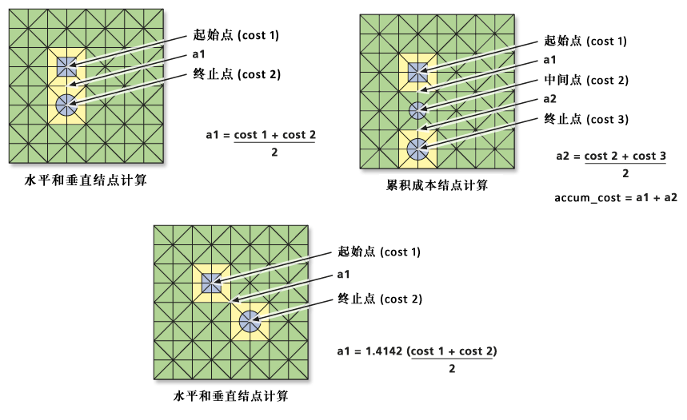 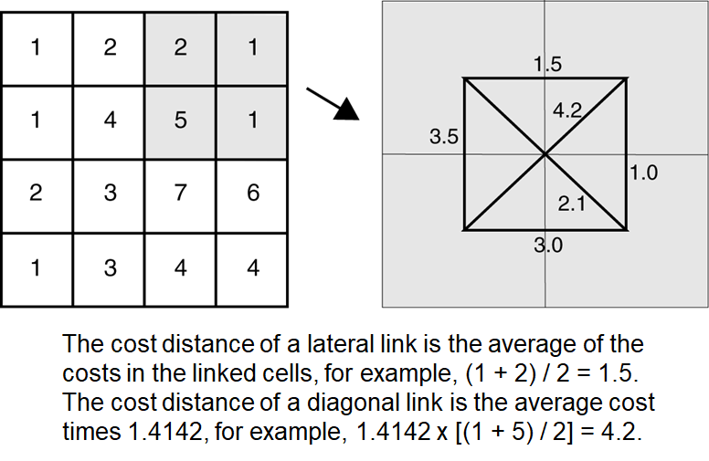 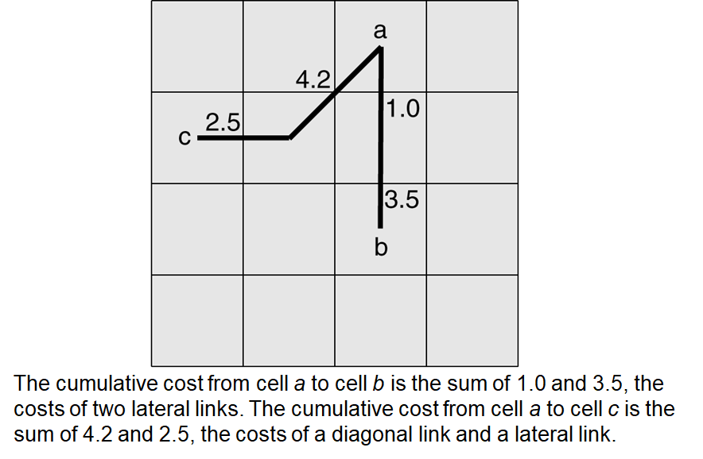# 最小累计成本
The process for deriving the least accumulative cost path is an iterative process based on Dijkstra’s algorithm.
案例：
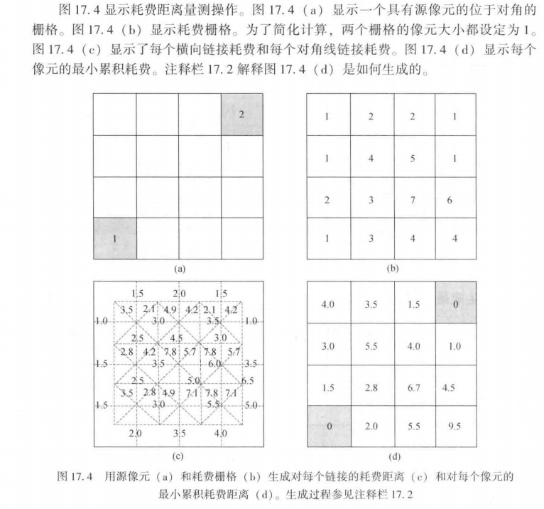其具体计算过程如下：
第一步先计算源像元（即左上和右下）与相邻像元之间的成本。即[1.0,1.5,1.5,2.0,2.8,4.2]
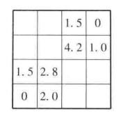
第二步，再找当前计算成本最低的点（即1.0位置的点）与相邻像元之间的成本。可明显发现，对于从左上角0到斜对角的成本4.2，而经过下方1.0再到斜对角的成本为4.0，比原来成本更新，所以需要替换。即[1.5,1.5,2.0,2.8,4.0,4.5,6.7]
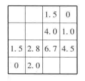
第三步，再选择当前计算成本最低的点（即1.5位置的点），接着计算其相邻像元之间的成本。若成本更高，则不进行替换。
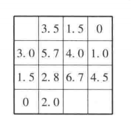
第四步，再选择当前计算成本最低的点（即2.0位置的点），接着计算其相邻像元之间的成本。若成本更高，则不进行替换。
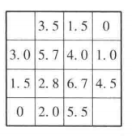
第五步，同理选择当前计算成本最低的点（即2.8位置的点），接着计算其相邻像元之间的成本。若成本更高，则不进行替换。
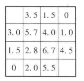
第六步，同理3.0
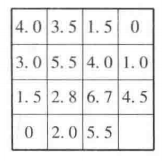
第七步，得到最终结果
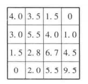
# 网络分析
网络是一个由点、线的二元关系构成的系统。网络分析的实质是通过对网络状态的模拟和分析，研究资源在网络上的流动和分配；同时，对网络结构及资源等的优化问题进行研究。
从数学的角度看：网络分析的基础是图论和运筹学；
从数据结构的角度看：网络分析的基础是合作线性图数据结构。
# 基本概念
图的定义
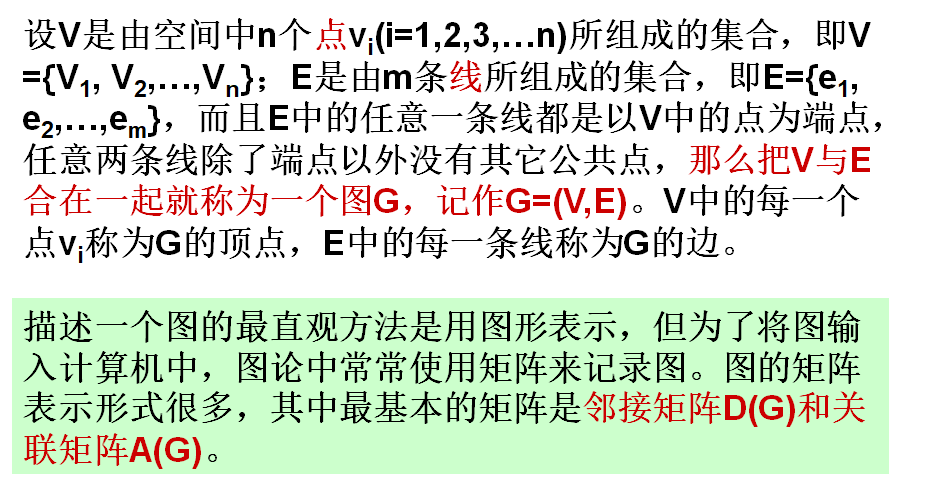无向图与有向图
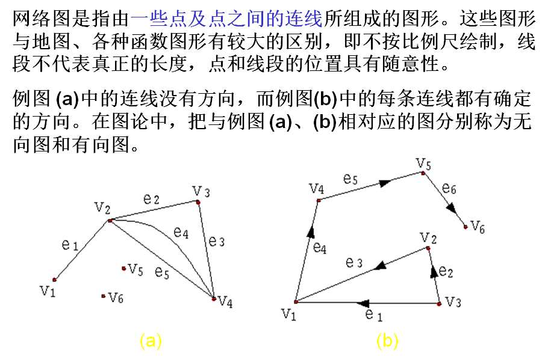如果把网络图论与交通运输地理特征联系起来，讨论的是一个地区内的公路系统。在这些系统的网络图上，顶点表示的是城镇，连线表示的是连接城镇之间的公路。在公路网络图中，有向图可以被认为是单行线，而无向图则可以被认为是双行线。
邻接矩阵
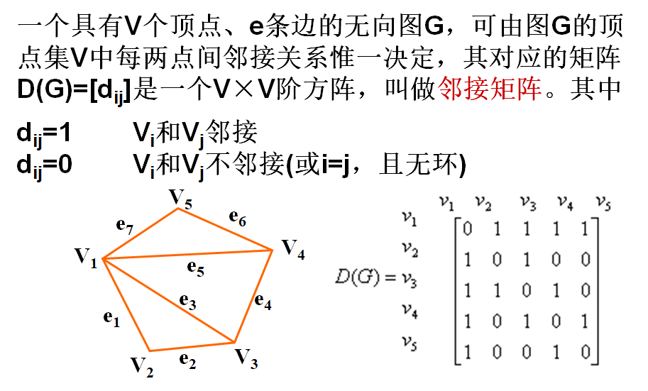关联矩阵
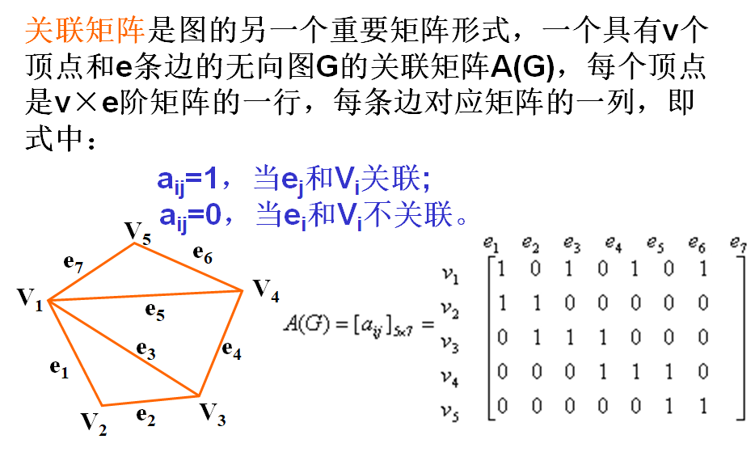
# 常用空间网络分析方法
网络跟踪（Trace）
研究网络中资源和信息的流向就是网络跟踪的过程。
定位与配置分析（location-allocation）
定位与配置分析是根据中心地理论框架，通过对供给系统和需求系统间空间关系的分析，实现网络设施布局的最优化。
定位是已知需求源的分布，确定哪里布设供应点最合适；
配置是已知供应点，确定其为哪些需求源提供服务。
定位与配置分析是决定一个或多个服务设施最优位置的过程，它的定位力求保证服务设施可以以最经济有效的方式为它所服务的人群提供服务。在此分析中，既有定位过程，也有资源分配过程。
定位配置分析的实质是线性规划问题。主要的算法包括：
- p-中心问题：在m个候选点中，选择p个供应点，为n个需求点服务，并使得从服务中心到需求点之间的距离（或时间、费用）最小。
- 中心服务范围的确定：中心服务范围是指一个服务设施在给定的时间或距离内，能够到达的区域。
- 中心资源的分配范围：资源分配就是将空间网络的边或者结点，按照中心的供应量及网络边和结点的需求量，分配给一个中心的过程，用来模拟空间网络上资源的供需关系。
路径分析（path analysis）
从网络模型的角度看最佳路经问题是求解网络中任意两点之间阻抗强度最小的路经。路经分析大量用于交通、救灾、抢险、消防及信息传输中。
- 静态求最佳路径：在给定每条链上的属性后，求最佳路径。
- N条最佳路径分析：确定起或终点，求代价最小的N条路径，因为在实际中最佳路径的选择只是理想情况，由于种种要素而要选择近似最佳路径。
- 最短路径或最佳耗费路径：确定起点终点和要经过的中间点、中间连线，求最短路径或最佳耗费路径。
- 动态最佳路径分析：实际网络中权值是随权值关系式变化的，可能还会临时出现一些障碍点，需要动态的计算最佳路径。
# DijKstra算法
先计算距离矩阵或者权矩阵
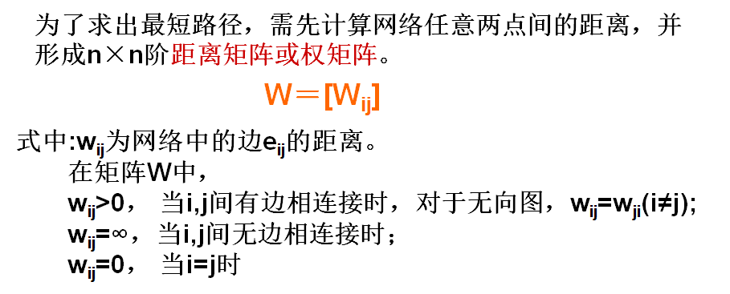
再求最短路径
案例演示：
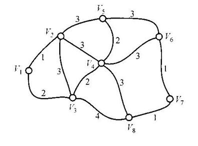计算到的最短有向图路径及其长度
先确定起点标号为0，其他结点标号为。
然后从开始，计算它到其他暂时标号的距离，取min[\text{j的旧标号},(\text{i的标号}+w_{ij})]
可知到距离为1比小，取min 1；同理到，取min 2；其他都是，则不变
再选择暂时标号的最小值，计算它到其他点的距离，取min
可知到的距离比小，则min 1+3，1+3；但是到的距离（1+3）比到的距离（2）大，所以不变。其他都是，则不变
同理选择暂时标号最小的，计算它到其他点的距离，取min
可知到为距离（4），不变；到为距离（6），变；其他都是，则不变。
同理选择暂时标号最小的，计算它到其他点的距离，取min
可知或者（因为距离都为4，任选其一即可）到为距离（6），不变；到距离（7），变；到距离（7），不变。其他都是，则不变。
同理选择暂时标号最小的，计算它到其他点的距离，取min
可知道距离（9），不变。到距离（7），变。其他都是，则不变。
网络跟踪
在点污染研究中，可以跟踪污染物从污染源开始，沿河流向下游扩散的过程。在电网应用中，可以根据不同开关的开、关状态，确定电力的流向。
网络跟踪中涉及的一个重要概念是“连通性”(Connectivity)，这定义了网络中弧段与弧段的连接方式，也决定了资源与信息在网络中流动时的走向。

定位与配置分析
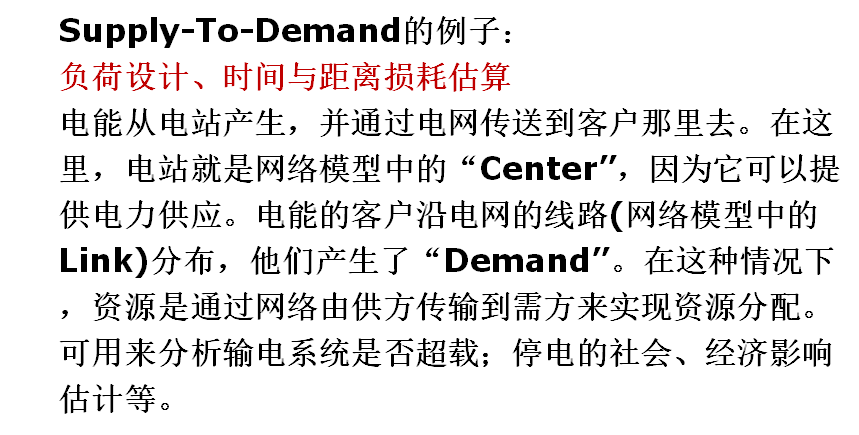路径分析
 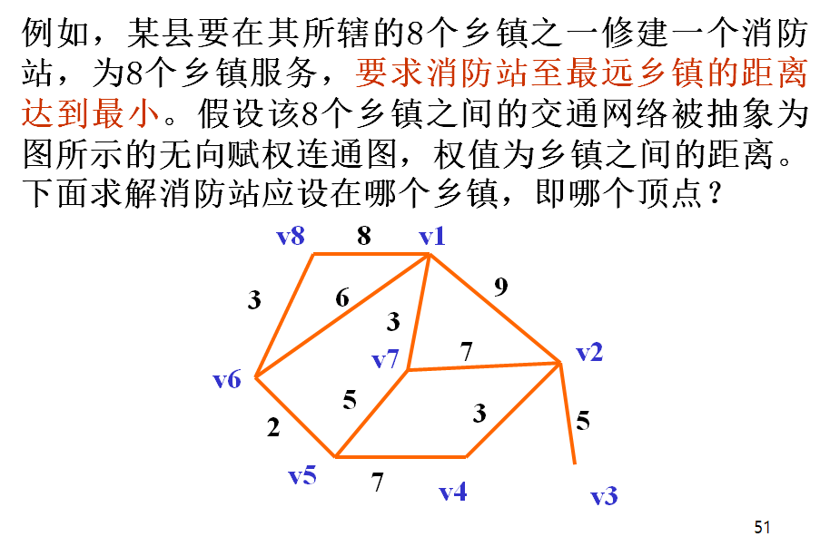 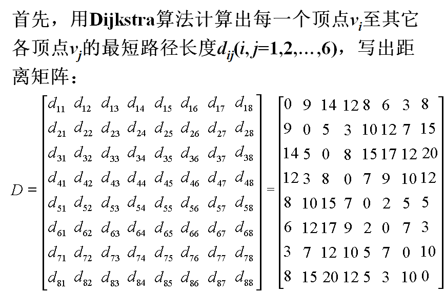 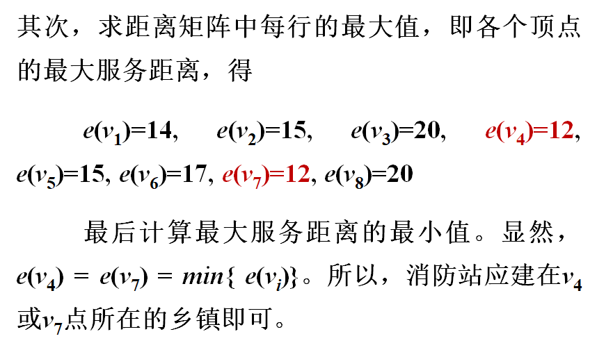
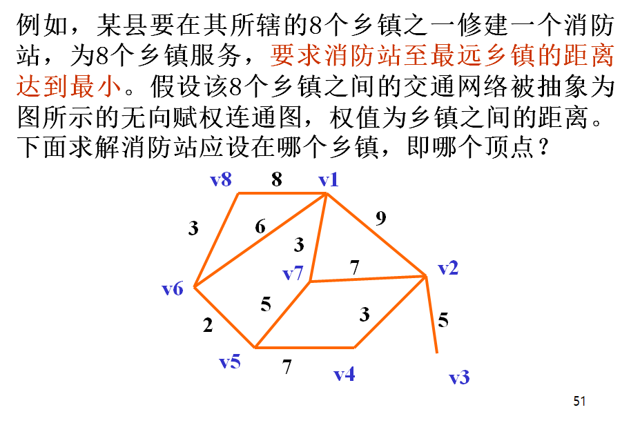 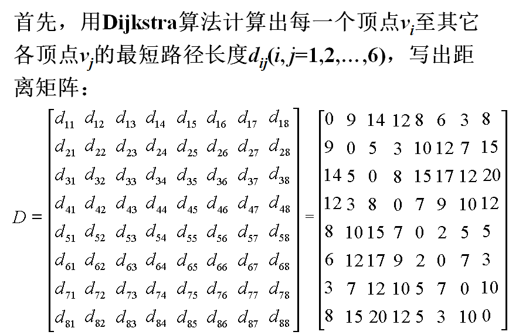 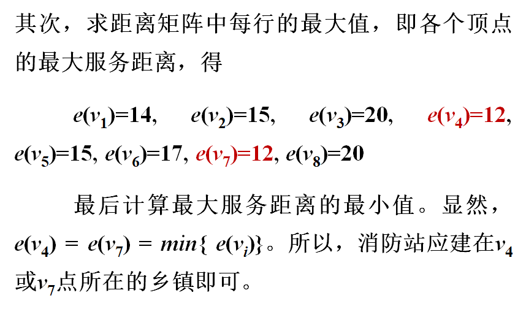